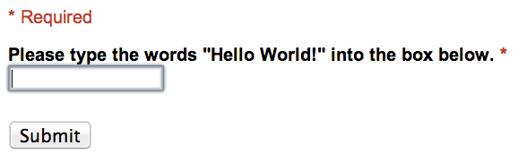

Want to start receiving information from the crowd as you read this tutorial? This section uses real-world examples to show you how to post tasks online. Because you’ll be following along, you’ll get your first results from the crowd before you finish the chapter. Our examples are admittedly basic, but you can use their replication code as templates for more advanced tasks.
1. Hello, World!
The first task for every programmer when learning a new language is to make it print “Hello, World!” The task below is the equivalent for crowdsourcing. By posting this task online, you will be asking workers to type “Hello, World!” into a form. They may, however, ignore these instructions and type anything they’d like. At first, this probably doesn’t sound too exciting. But, after completing this task, you will be able to run your first crowdsourcing experiment.
If you’d like to look at a complete, live version of this task while you’re following our instructions, you can look at our version
here. The completed Hello, World task should look like this:

2. Image Classification Task
In this fruit labeling task, you will see 20 pictures of fruit. Please decide what kind of fruit it is.
Go to the link below. Please make an account there and log in.
Fruit labeling task
After logging in, you will see 20 pictures of fruit. Please label each picture of fruit correctly. Once you have finished, you will see a message. Give the message as your answer below to complete the task.
3. Find a phone number of a business
You will see 20 business names. Please look up the requested information about a business.
Go to the link below. Please make an account there and log in.
Business search task
After logging in, you will see 20 business names. Please look up the missing piece of information about this business. Once you have finished, you will see a message. Give the message as your answer below to complete the task.